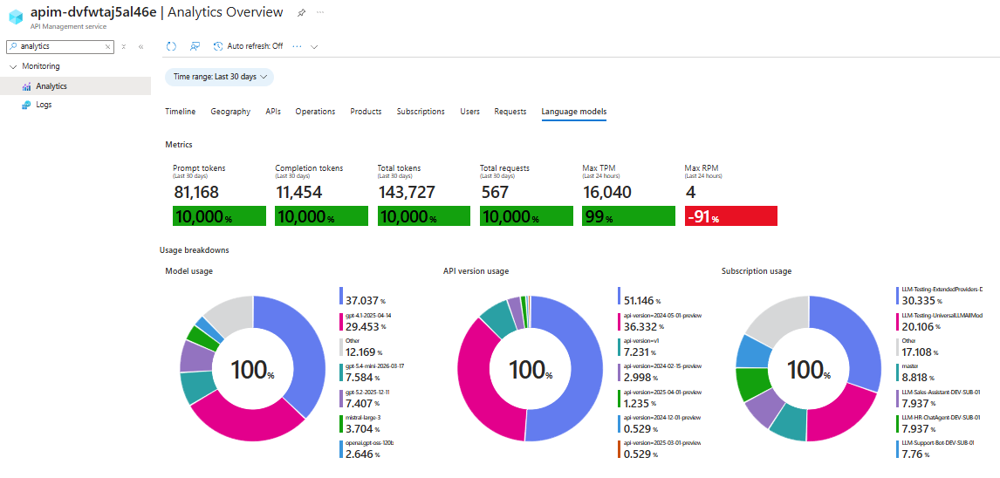
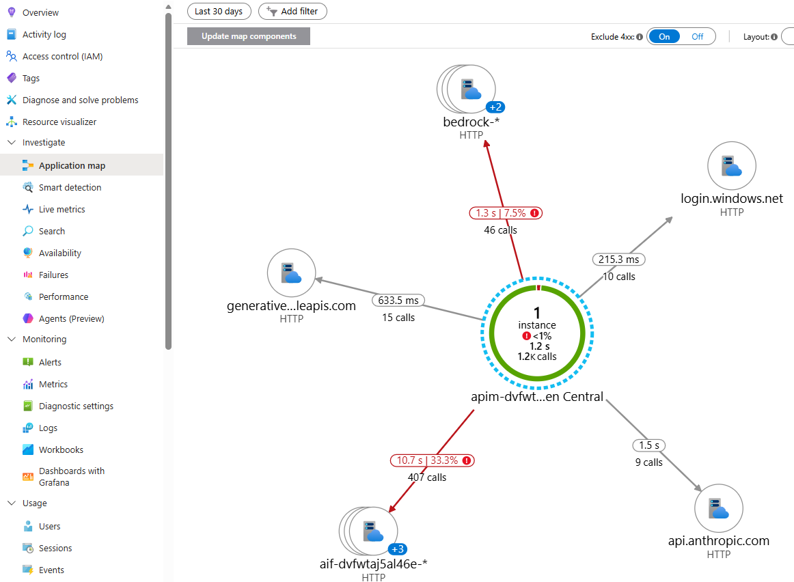
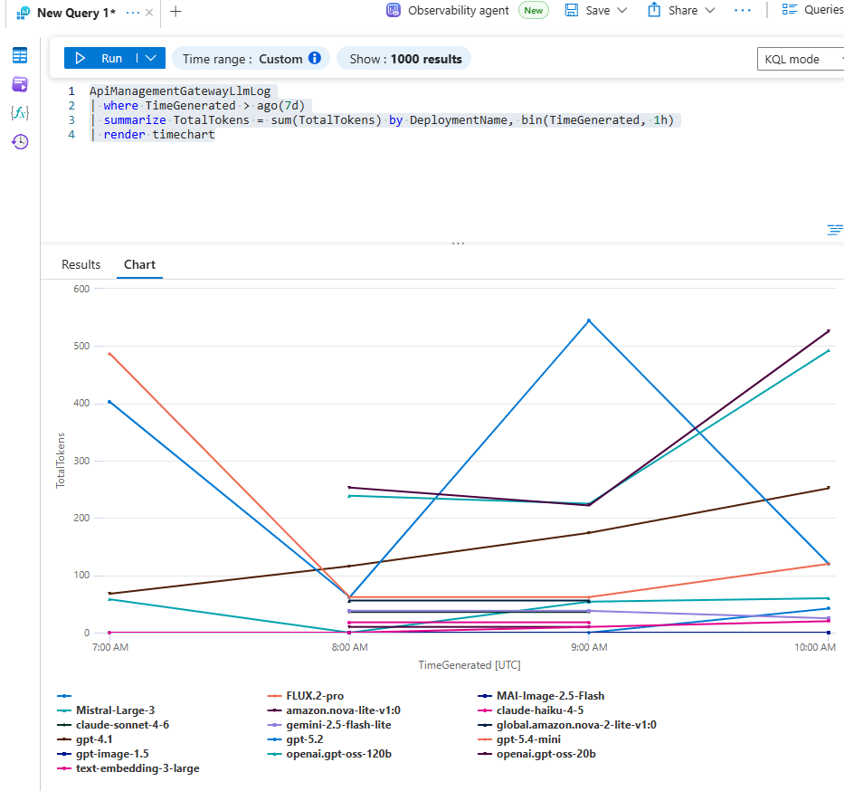
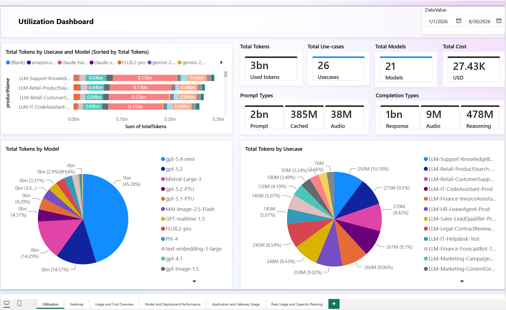

Platform Observability Guide
Citadel Governance Hub provides layered observability over every AI request that flows through the unified gateway. Because all AI consumption is funneled through Azure API Management (APIM), the hub can observe usage, performance, cost, and — optionally — the full prompt/response content from a single, central control plane, without instrumenting individual agents or applications.
This guide describes the four complementary observability capabilities shipped in the accelerator, how each one is configured in the infrastructure-as-code, and where to look for the data.
💡 Reading tip: Each capability starts with a plain-language "What it provides" overview for all readers. The deeper "⚙️ How it is configured in the accelerator" sections are collapsed by default — click to expand them when you need the infrastructure-as-code detail.
| # | Capability | Primary question it answers | Data store |
|---|---|---|---|
| 1 | APIM Analytics Dashboard | How much are my LLMs / AI services being used? | Azure Monitor metrics |
| 2 | APIM → Application Insights | Is the gateway healthy and fast? | Application Insights |
| 3 | APIM → Log Analytics (ApiManagementGatewayLlmLogs) |
What exactly was sent and returned? | Log Analytics workspace |
| 4 | Cosmos DB usage data + Power BI | Who is spending what, and how do I charge it back? | Cosmos DB → Power BI |
flowchart LR
Client[Agents & Apps] --> APIM[🚪 APIM AI Gateway]
APIM -->|emit-metric / llm-emit-token-metric| Metrics[(App Insights Metrics)]
APIM -->|applicationinsights diagnostic| AI[(App Insights)]
APIM -->|azuremonitor diagnostic| LAW[(Log Analytics<br/>ApiManagementGatewayLlmLogs)]
APIM -->|log-to-eventhub| EH[(Event Hub)]
EH --> LA[⚡ Usage Ingestion<br/>Logic App]
LA --> Cosmos[(Cosmos DB<br/>llm-usage-container)]
Cosmos --> PBI[📊 Power BI Dashboard]
Metrics --> Portal[Azure Monitor Portal<br/>APIM Analytics]
Metrics --> LA
AI --> Portal
LAW --> Portal1. APIM Analytics Dashboard (built-in LLM & AI usage)
What it provides
APIM ships with a native Analytics experience in the Azure portal (APIM instance → Monitoring → Analytics) plus a dedicated Language Models view. Because the gateway emits token-level custom metrics on every request, you get out-of-the-box charts for:
- Requests per API, product (access contract), and operation
- Token consumption (prompt / completion / total) per model and per product
- Latency and response-code distribution

⚙️ How it is configured in the accelerator — technical details (click to expand)
The built-in analytics view is powered by the APIM Azure Monitor diagnostic settings, not by the usage policies. The accelerator attaches an azuremonitor diagnostic to each inference API that is configured to emit the logs and metrics related to the generative AI gateway (requests, tokens, models, throttling). This is what surfaces in the portal's Analytics → Language Models experience — no additional configuration is required beyond deploying the hub.
The relevant setting is exposed on each API under Settings → Azure Monitor, where the "Log LLM messages" toggle controls whether prompt/completion message content is captured alongside the metadata. In infrastructure-as-code this maps to the largeLanguageModel block of the azureMonitorLogSettings parameter applied by the azuremonitor diagnostic (inference-api.bicep, api.bicep):
resource apiDiagnostics 'Microsoft.ApiManagement/service/apis/diagnostics@2024-06-01-preview' = {
name: 'azuremonitor'
properties: {
loggerId: apimLoggerId
// ...
largeLanguageModel: {
logs: 'enabled' // emit generative-AI gateway logs & metrics
requests: { messages: 'all', maxSizeInBytes: 262144 } // "Log LLM messages" — prompt content (optional)
responses: { messages: 'all', maxSizeInBytes: 262144 } // "Log LLM messages" — completion content (optional)
}
}
}
The metadata (token counts, model, deployment, throttling) powers the built-in dashboards regardless of the message toggle. Enabling "Log LLM messages" additionally captures prompt/completion content — see capability 3 for the detailed logs and the data-governance implications of that toggle.
Note: The built-in dashboard shows aggregated usage; it does not contain per-request detail or (unless the message toggle is enabled) prompt content. For request-level detail use capability 3, and for cost attribution use capability 4.
Related — Application Insights custom metrics. Separately from the built-in dashboard, the gateway usage policies (
<llm-emit-token-metric>in frag-set-llm-usage.xml,<azure-openai-emit-token-metric>in the streaming fragments, and<emit-metric>for critical-event alerting in frag-raise-alert-events.xml) ship custom metrics to Application Insights. These are described under capability 2 and are the recommended target for alerting (see the Throttling & Critical Event Alerting Guide).
2. APIM → Application Insights (performance & usage monitoring)
What it provides
Every inference API is wired to an Application Insights diagnostic channel, giving you application performance monitoring (APM) for the gateway itself:
- End-to-end request tracing with W3C correlation across the gateway → backend hop
- Failure and dependency analytics, live metrics, and the Application Map
- Response times, failure rates, and configurable request/response header capture
- LLM usage & throttling custom metrics emitted by the gateway policies — the recommended target for alerting
- Optional pre-built Azure portal dashboards

⚙️ How it is configured in the accelerator — technical details (click to expand)
Logger + credential handling. The accelerator provisions an APIM logger named appinsights-logger. Following Microsoft's guidance, the Application Insights connection string is not embedded in the logger resource. Instead it is stored as a Key Vault secret and exposed to APIM through a named value resolved with the APIM user-assigned managed identity (auto-refreshed on rotation):
// bicep/infra/modules/apim/apim.bicep
var appInsightsConnectionStringSecretName = 'apim-appinsights-connection-string' // Key Vault secret
var appInsightsLoggerCredentialsNamedValueName = 'appinsights-logger-credentials' // APIM named value → secret
Per-API diagnostic. Each inference API attaches an applicationinsights diagnostic with verbose logging, client-IP logging, metrics, and 100% fixed sampling (inference-api.bicep, api.bicep):
resource apiDiagnosticsAppInsights 'Microsoft.ApiManagement/service/apis/diagnostics@2022-08-01' = {
name: 'applicationinsights'
properties: {
alwaysLog: 'allErrors'
httpCorrelationProtocol: 'W3C'
logClientIp: true
metrics: true
verbosity: 'verbose'
sampling: { samplingType: 'fixed', percentage: 100 }
// frontend/backend header + body capture from appInsightsLogSettings
}
}
Header capture is controlled by the appInsightsLogSettings parameter. By default a curated set of correlation and rate-limit headers is captured, with no request body:
param appInsightsLogSettings object = {
headers: [ 'Content-type', 'User-agent', 'x-ms-region',
'x-ratelimit-remaining-tokens', 'x-ratelimit-remaining-requests' ]
body: { bytes: 0 }
}
LLM usage & alerting custom metrics. In addition to request telemetry, the gateway usage policies emit custom metrics into this Application Insights component. <llm-emit-token-metric> (frag-set-llm-usage.xml, namespace llm-usage), while <emit-metric> in frag-raise-alert-events.xml publishes critical-event alerts — throttling (429), backend failures (5xx), authorization failures, content-safety blocks, and PII failures (metric AI Gateway Alert, namespace ai-gateway-alerts, sliced by an alertType dimension):
<llm-emit-token-metric namespace="llm-usage">
<dimension name="productName" value="@(context.Product?.Name ?? "Portal-Admin")" />
<dimension name="deploymentName" value="@((string)context.Variables.GetValueOrDefault<string>("requestedModel","NA"))" />
<dimension name="appId" value="@((string)context.Variables.GetValueOrDefault<string>("appId","NA"))" />
<!-- up to 6 custom dimensions supported -->
</llm-emit-token-metric>
Custom metrics require the Application Insights component to have dimension support enabled, which the accelerator sets automatically:
// bicep/infra/modules/monitor/applicationinsights.bicep
resource applicationInsights 'Microsoft.Insights/components@2020-02-02' = {
properties: {
Application_Type: 'web'
WorkspaceResourceId: logAnalyticsWorkspaceId
CustomMetricsOptedInType: 'WithDimensions' // enables custom metric dimensions
}
}
Because these are App Insights custom metrics, alerts are easy to set up directly against them (e.g., alert when throttling-events exceeds a threshold for a given product or deployment). See the Throttling Events Handling Guide for a worked alerting example.
Connected to Log Analytics. The Application Insights component is workspace-based (WorkspaceResourceId points at the hub Log Analytics workspace), so App Insights telemetry and gateway logs live in the same workspace and can be cross-queried with KQL.
Optional portal dashboards. Set createAppInsightsDashboards = true to deploy the pre-built Azure portal dashboards defined in applicationinsights-dashboard.bicep. This is false in dev and true in the production parameter file (main.parameters.prod.bicepparam).
3. APIM → Log Analytics (detailed LLM logs + optional prompt auditing)
What it provides
The gateway sends LLM-aware diagnostics to Azure Monitor / Log Analytics, surfaced in the dedicated ApiManagementGatewayLlmLogs table (with correlated entries in ApiManagementGatewayLogs). This is the most detailed built-in signal and supports:
- Per-request model, deployment, token usage, and gateway/region metadata
- Full KQL querying, joins, workbooks, and alerting over LLM traffic
- Optional prompt / completion auditing — capturing the actual request and response messages when compliance or debugging requires it
Example KQL:
ApiManagementGatewayLlmLog
| where TimeGenerated > ago(7d)
| summarize TotalTokens = sum(TotalTokens) by DeploymentName, bin(TimeGenerated, 1h)
| render timechart

⚙️ How it is configured in the accelerator — technical details (click to expand)
Azure Monitor logger. The gateway attaches an azuremonitor diagnostic to each inference API. Its behavior is driven by the azureMonitorLogSettings parameter, whose largeLanguageModel block controls prompt/completion auditing (inference-api.bicep, api.bicep):
param azureMonitorLogSettings object = {
frontend: {
request: { headers: [], body: { bytes: 0 } }
response: { headers: [], body: { bytes: 0 } }
}
backend: {
request: { headers: [], body: { bytes: 0 } }
response: { headers: [], body: { bytes: 0 } }
}
largeLanguageModel: {
logs: 'enabled' // LLM logging on
requests: { messages: 'all', maxSizeInBytes: 262144 } // audit prompts (≤ 256 KB)
responses: { messages: 'all', maxSizeInBytes: 262144 } // audit completions (≤ 256 KB)
}
}
The diagnostic itself uses verbose logging, client-IP logging, and 100% sampling:
resource apiDiagnostics 'Microsoft.ApiManagement/service/apis/diagnostics@2024-06-01-preview' = {
name: 'azuremonitor'
properties: {
alwaysLog: 'allErrors'
verbosity: 'verbose'
logClientIp: true
loggerId: apimLoggerId
sampling: { samplingType: 'fixed', percentage: 100 }
largeLanguageModel: { /* from azureMonitorLogSettings.largeLanguageModel */ }
}
}
Controlling prompt/response auditing. Prompt and completion content capture is a deliberate, configurable choice:
| Goal | Setting |
|---|---|
| Capture full prompts & completions (auditing / debugging) | largeLanguageModel.requests.messages = 'all', responses.messages = 'all' |
| Log LLM metadata (tokens, model) but not message content | requests.messages = 'none', responses.messages = 'none' |
| Disable LLM logging entirely | largeLanguageModel.logs = 'disabled' |
| Limit payload size | reduce maxSizeInBytes (default 262144 = 256 KB) |
⚠️ Data governance: Capturing message content means prompts and completions (which may contain sensitive or personal data) are stored in Log Analytics. Enable it only where your data-handling policy allows, consider pairing it with PII detection & masking, and apply appropriate workspace retention and access controls.
Where the workspace comes from. In the primary deployment the logger targets the hub-provisioned Log Analytics workspace. When using the APIM Gateway Upgrade submodule against an existing instance, deployAzureMonitorLogger + logAnalyticsWorkspaceResourceId wire the azuremonitor logger and diagnostic settings to an existing workspace without provisioning a new one.
For the full parameter reference and production examples, see the Azure Monitor Log Settings section of the Full Deployment Guide.
4. Cosmos DB usage data + Power BI (FinOps & chargeback)
What it provides
For long-term, richly structured usage analytics and cost attribution / chargeback, the gateway streams a compact usage record per request into Cosmos DB, which is then visualized in Power BI. This capability answers the FinOps questions the metrics and logs cannot:
- Cost per product (access contract), model, backend, and application
- Detailed token breakdown (cached, audio, reasoning, prediction) priced independently
- Chargeback/showback of fixed-cost capacity (e.g., PTU) via proportional distribution
- Two free-form custom dimensions per record (e.g., end-user, session, cost center)

⚙️ How it is configured in the accelerator — technical details (click to expand)
LLM Usage: ingestion is done through Logic Apps workflow that runs on a schedule (8 times per day by default). The workflow reads the custom metrics in the llm-usage namespace from the Application Insights component, transforms them into a compact usage record, and writes them to the Cosmos DB llm-usage-container. The workflow is defined in llm-usage-ingestion/workflow.json.
Non-LLM Usage: It is not activated by default, but it can be activated through referencing ai-usage policy fragment in the access contract. This policy relies on log-to-eventhub policy to send the usage data to Event Hub, which is then processed by the same Logic App workflow and written to Cosmos DB.
Published assets (Tools/MCP & Agents/A2A): the Publish Contract tracks usage the same way as LLM — inbound emit-metric calls to the mcp-usage / a2a-usage App Insights namespaces (tool/agent name carried on the deploymentName dimension). Two dedicated scheduled Logic App workflows (mcp-usage-ingestion, agent-usage-ingestion) read those custom metrics and write request-count records into the mcp-usage-container / agent-usage-container Cosmos collections. No Event Hub / log-to-eventhub is involved — this keeps MCP streaming intact (MCP policies never read the response body).
Pricing join & visualization. A second model-pricing container holds per-token-type unit costs; the Power BI report joins usage against pricing to compute cost. The report template, data model, custom-dimension activation, and PTU/fixed-cost handling are documented in detail in the dedicated guide.
🔗 See: Power BI Dashboard Guide for the complete data model, pricing setup, custom dimensions, and step-by-step report configuration.
Choosing the right signal
| You need… | Use |
|---|---|
| A quick, near real-time view of usage & performance | APIM Analytics Dashboard (1) |
| Gateway health, latency, failures, tracing | Application Insights (2) |
| Per-request detail and (optionally) the actual prompts/responses | Log Analytics ApiManagementGatewayLlmLogs (3) |
| Cost attribution, chargeback, and FinOps reporting | Cosmos DB + Power BI (4) |
All four capabilities are complementary and enabled by default (except prompt-content auditing and the optional portal dashboards, which are opt-in). Together they give platform teams, security/compliance, and FinOps a shared, gateway-centric view of every AI interaction in the enterprise.
Related guides
- Power BI Dashboard
- Throttling Events Handling
- Access Contracts
- Full Deployment Guide — Azure Monitor & App Insights log settings reference